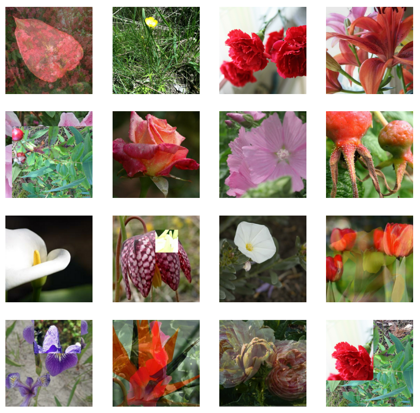

After graduating from Chapman University with a physics & philosophy degree, I began an internship at Pacific Life as a data analyst in HR where I am helping various groups automate their reporting processes. During this pandemic, I have spent much of my time researching natural language processing and computer vision. On this website, you'll find several ongoing projects within these two fields that I continually update as I experiment with different network architectures, preprocessings, and augmentation strategies.
Download Resume

Using a RoBERTa model, you can train a transformer to classify pairs of sequences (premises/hypothesis pairs) into three classes: 0 - entailment, 1 - contradiction, 2 - neutral. With XLM-RoBERTa, you can do the same, but in 100 different languages. In this project, I use techniques based on Google translate to generate additional samples for training augmentation and test time augmentation. The current model is able to classify over 5,000 premise/hypothesis pairs in 15 different languages with an accuracy above 80%.

In this project, I fine-tuned deep CNNs and blend them into a meta-model to test on different computer vision problems. To accomodate for larger training sessions (> 1GB) and computationally expensive augmentation techniques, the model is designed to be trained on Tensor Processing Units.

Here, I experiment with different types of sequential neural network architectures to build a model capable of tagging Tweets that are about real natural disasters. After engineering new features, testing different word embeddings and network architectures, the model attains an accuracy above 84% (F1 score) on a 3000 Tweet unseen test set. The current project explores LSTMs, GRUs, and transformer models like BERT and XLNet.